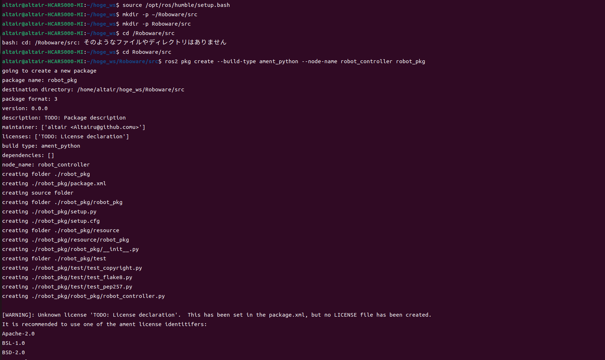

ROS 2 高専ロボコン実践編-その2-
環境
- Python 3.10
- ThinkPad L380 Ubuntu 22.04.3 LTS
- ROS2 Humble
⚠️この資料は結構手を抜いて作っています．⚠️
ROS2パッケージの構築
ここでは，ROS2を用いたロボコン向けのシステムを実際に構築していく．
以下のように通信層，制御層，ハードウェア層 の3つに分け，それぞれの役割を明確にする．
| 層 | 役割 | 具体的な処理 |
|---|---|---|
| 通信層 | スマホ・PCとの通信 | WebSocket を使用 |
| 制御層 | 経路計画・制御 | 目標地点まで移動 |
| ハードウェア層 | 通信処理 | 自己位置を受け取り，Vx,Vy，ωを送信 |
│ ├── web_socket_node.py # 通信ノード
│ ├── controller_node.py # 制御ノード
│ ├── serial_read_node.py # シリアル受信ノード
│ ├── serial_send_node.py # シリアル送信ノード
プログラミング
- 設定ファイルの実行
sourceコマンドでアンダーレイの設定ファイルを実行
source /opt/ros/humble/setup.bash
- ワークスペース用のディレクトリ作成
mkdirコマンドでディレクトリを作成
mkdir -p ~/Roboware/src
ここで -p オプションは，親ディレクトリが存在しない場合に自動で作成するオプションである．
作成された Roboware ディレクトリがワークスペース となり，その中の src にパッケージを作成する．
- パッケージの作成
cdコマンドでディレクトリを移動する
cd ~/Roboware/src
つぎにros2 pkg createコマンドでパッケージを作成
ros2 pkg create --build-type ament_python --node-name robot_controller robot_pkg
ノードとパッケージの命名
| 項目 | ルール | 理由 |
|---|---|---|
| 小文字のみ | robot_controller ✅ |
ROS2 の命名規則に統一 |
| 単語はアンダースコアで区切る | serial_read_node ✅ |
読みやすくするため |
| 役割を明確にする | position_estimation ✅ |
何をするノードなのか分かりやすくする |
| 一意の名前にする | robot1_controller ✅ |
名前の競合を防ぐ |
| 汎用的な名前を避ける | custom_navigation ✅ |
標準パッケージとの衝突を避ける |

ワークスペースの初期化
cd ~/Roboware
colcon build
これでワークスペースがROS2用にセットアップされる．

ビルドできたことがわかる． ではVScodeで開いてみよう．
code .

システム概要
ノードの構成
| ノード名 | 役割 |
|---|---|
| web_socket_node.py | スマホと通信し，目標座標を受信 |
| robot_controller.py | 受信した目標座標に基づいて，速度 \( V_x, V_y, \omega \) を計算 |
| serial_read_node.py | マイコンからの自己位置データを受信 |
| serial_send_node.py | 計算された速度指令をマイコンへ送信 |
以下をセットアップファイルに記述すること
'console_scripts': [
'web_socket_node = robot_pkg.web_socket_node:main',
'robot_controller = robot_pkg.robot_controller:main',
'serial_read_node = robot_pkg.serial_read_node:main',
'serial_send_node = robot_pkg.serial_send_node:main',
],
ノードの作成
web_socket_node.py（通信ノード）
スマホから 目標座標（座標1，座標2，座標3） を受信し，ROS2トピック target_position にパブリッシュする．
📌 やること
- WebSocket サーバーを立ち上げる（FastAPI）
- スマホから目標座標を受信し，ROS2 にパブリッシュする
📝 コード
import rclpy
from rclpy.node import Node
from std_msgs.msg import Float32MultiArray, String
from fastapi import FastAPI, WebSocket
from fastapi.responses import HTMLResponse
import uvicorn
import threading
import os
# UIファイルのパス
UI_PATH = "/home/altair/hoge_ws/src/robot_pkg/UI.txt"
class WebSocketNode(Node):
def __init__(self):
super().__init__('web_socket_node')
self.publisher_ = self.create_publisher(Float32MultiArray, 'target_position', 10)
self.subscriber_ = self.create_subscription(Float32MultiArray, 'estimated_position', self.position_callback, 10)
self.current_position = [0.0, 0.0, 0.0]
self.client_socket = None # WebSocket クライアント
# FastAPI のセットアップ
self.app = FastAPI()
self.app.add_api_route("/", self.get_ui)
self.app.add_websocket_route("/ws", self.websocket_endpoint)
async def get_ui(self):
""" UI（UI.txt）を表示 """
if os.path.exists(UI_PATH):
with open(UI_PATH, 'r', encoding='utf-8') as f:
return HTMLResponse(content=f.read())
return HTMLResponse(content="<h1>UI Not Found</h1>", status_code=404)
async def websocket_endpoint(self, websocket: WebSocket):
""" WebSocket 通信のエンドポイント """
await websocket.accept()
self.client_socket = websocket # WebSocket クライアントを保存
try:
while True:
data = await websocket.receive_text()
if data in ['1', '2', '3']:
target_positions = {
'1': [0.0, 0.0, 0.0],
'2': [10.0, 0.0, 0.0],
'3': [10.0, 10.0, 0.0]
}
msg = Float32MultiArray()
msg.data = target_positions[data]
self.publisher_.publish(msg)
self.get_logger().info(f"Published Target Position: {msg.data}")
# 送信データをそのままクライアントに返す（デバッグ用）
await websocket.send_text(f"Received: {data}")
except Exception as e:
self.get_logger().error(f"WebSocket Error: {e}")
finally:
self.client_socket = None # 切断時にクライアントをリセット
def position_callback(self, msg):
self.current_position = msg.data
if self.client_socket:
position_data = ",".join(map(str, self.current_position))
try:
self.client_socket.send_text(position_data)
except:
self.client_socket = None
def ros2_thread(node):
rclpy.spin(node)
def main():
rclpy.init()
node = WebSocketNode()
# ROS2 ノードを別スレッドで実行
ros_thread = threading.Thread(target=ros2_thread, args=(node,))
ros_thread.start()
# FastAPI サーバーを起動
uvicorn.run(node.app, host="0.0.0.0", port=8000)
if __name__ == '__main__':
main()
UIの例
<!DOCTYPE html>
<html lang="ja">
<head>
<meta charset="UTF-8">
<meta name="viewport" content="width=device-width, initial-scale=1.0">
<title>ロボット制御UI</title>
<style>
body {
font-family: Arial, sans-serif;
text-align: center;
background-color: #f4f4f4;
}
.button {
width: 150px;
height: 50px;
margin: 10px;
font-size: 18px;
cursor: pointer;
}
.status {
font-size: 20px;
margin-top: 20px;
}
</style>
</head>
<body>
<h2>ロボット制御UI</h2>
<!-- 座標選択ボタン -->
<button class="button" onclick="sendCommand(1)">座標1</button>
<button class="button" onclick="sendCommand(2)">座標2</button>
<button class="button" onclick="sendCommand(3)">座標3</button>
<script>
const ws = new WebSocket("ws://192.168.98.216:8010/ws");
ws.onopen = function() {
console.log("WebSocket 接続成功");
};
function sendCommand(target) {
const message = `${target},0,0,0,0,0`;
ws.send(message);
}
</script>
</body>
</html>
robot_controller.py（制御ノード）
自己位置と目標座標を比較し，ロボットの速度 \( V_x, V_y, \omega \) を計算する．
📌 やること
estimated_positionから 自己位置 を取得target_positionから 目標座標 を取得- PID 制御を使用 して \( V_x, V_y, \omega \) を計算
cmd_velに速度指令をパブリッシュ
📝 コード
import rclpy
from rclpy.node import Node
from std_msgs.msg import Float32MultiArray
import math
class ControllerNode(Node):
def __init__(self):
super().__init__('robot_controller')
self.publisher_ = self.create_publisher(Float32MultiArray, 'cmd_vel', 10)
self.create_subscription(Float32MultiArray, 'estimated_position', self.position_callback, 10)
self.create_subscription(Float32MultiArray, 'target_position', self.target_callback, 10)
self.current_position = [0.0, 0.0, 0.0]
self.target_position = [0.0, 0.0, 0.0]
self.Kp = 1.0 # PID ゲイン
self.max_speed = 500.0 # 最大速度 [mm/s]
self.max_omega = 30.0 # 最大角速度 [deg/s]
def position_callback(self, msg):
self.current_position = msg.data
def target_callback(self, msg):
self.target_position = msg.data
self.calculate_velocity()
def calculate_velocity(self):
dx = self.target_position[0] - self.current_position[0]
dy = self.target_position[1] - self.current_position[1]
distance = math.sqrt(dx**2 + dy**2)
theta_error = self.target_position[2] - self.current_position[2]
Vx = min(self.max_speed, self.Kp * dx)
Vy = min(self.max_speed, self.Kp * dy)
omega = min(self.max_omega, self.Kp * theta_error)
msg = Float32MultiArray()
msg.data = [Vx, Vy, omega]
self.publisher_.publish(msg)
self.get_logger().info(f"Published Velocities: Vx={Vx}, Vy={Vy}, Omega={omega}")
def main():
rclpy.init()
node = ControllerNode()
rclpy.spin(node)
node.destroy_node()
rclpy.shutdown()
if __name__ == '__main__':
main()
serial_read_node.py（シリアル受信ノード）
マイコンからの自己位置データ [0xA5, 0xA5, X, Y, θ] を受信し，estimated_position にパブリッシュする．
📝 コード
import rclpy
from rclpy.node import Node
from std_msgs.msg import Float32MultiArray
import serial
import struct
class SerialReadNode(Node):
def __init__(self):
super().__init__('serial_read_node')
self.publisher_ = self.create_publisher(Float32MultiArray, 'estimated_position', 10)
self.ser = serial.Serial('/dev/ttyACM0', 115200, timeout=1)
self.create_timer(0.1, self.read_serial_data)
def read_serial_data(self):
if self.ser.in_waiting >= 14:
header = self.ser.read(2)
if header == b'\xA5\xA5':
data = self.ser.read(12)
X, Y, theta = struct.unpack('fff', data)
msg = Float32MultiArray()
msg.data = [X, Y, theta]
self.publisher_.publish(msg)
self.get_logger().info(f"Received Position: X={X}, Y={Y}, Theta={theta}")
def main():
rclpy.init()
node = SerialReadNode()
rclpy.spin(node)
node.destroy_node()
rclpy.shutdown()
if __name__ == '__main__':
main()
serial_send_node.py（シリアル送信ノード）
計算された速度 [0xA5, 0xA5, Vx, Vy, ω] をマイコンに送信する．
📝 コード
import rclpy
from rclpy.node import Node
from std_msgs.msg import Float32MultiArray
import serial
import struct
class SerialSendNode(Node):
def __init__(self):
super().__init__('serial_send_node')
self.subscription = self.create_subscription(Float32MultiArray, 'cmd_vel', self.send_serial_data, 10)
self.ser = serial.Serial('/dev/ttyACM0', 115200, timeout=1)
def send_serial_data(self, msg):
header = b'\xA5\xA5'
data = struct.pack('fff', msg.data[0], msg.data[1], msg.data[2])
self.ser.write(header + data)
self.get_logger().info(f"Sent Velocity: Vx={msg.data[0]}, Vy={msg.data[1]}, Omega={msg.data[2]}")
def main():
rclpy.init()
node = SerialSendNode()
rclpy.spin(node)
node.destroy_node()
rclpy.shutdown()
if __name__ == '__main__':
main()

WebSocketノードの実行
環境のセットアップの後実行
以下のコマンドでWebSocketノードを起動する．
ros2 run robot_pkg web_socket_node
これでFastAPIサーバーが起動し，WebSocket通信が可能になる．
altair@altair-HCAR5000-MI:~/hoge_ws/Roboware$ source install/setup.bash
altair@altair-HCAR5000-MI:~/hoge_ws/Roboware$ ros2 run robot_pkg web_socket_node
INFO: Started server process [10168]
INFO: Waiting for application startup.
INFO: Application startup complete.
INFO: Uvicorn running on http://localhost:8000 (Press CTRL+C to quit)
エラーの様子

WebSocket UI の確認
ブラウザで以下のURLにアクセスする．
http://<ロボットPCのIP>:8000/
WebSocket通信の確認
- UI画面で
1,2,3のボタンを押すと，対応する座標がtarget_positionトピックにパブリッシュされる． ros2 topic echo /target_positionを実行し，座標が送信されているか確認する．
ros2 topic echo /target_position
期待される出力：
data: [0.0, 0.0, 0.0] # 座標1を選択した場合
estimated_positionをros2 topic pubで送信し，UI に反映されるか確認する．
ros2 topic pub /estimated_position std_msgs/msg/Float32MultiArray "{data: [5.0, 5.0, 0.0]}"
ros2_nodes.sh（全ノード起動スクリプト）
以下のスクリプトを作成し，実行するとすべてのノードが起動する．
#!/bin/bash
source /opt/ros/humble/setup.bash
source ~/hoge_ws/install/setup.bash
gnome-terminal --tab --title="WebSocket Node" -- bash -c "ros2 run robot_pkg web_socket_node; exec bash"
gnome-terminal --tab --title="Controller Node" -- bash -c "ros2 run robot_pkg robot_controller; exec bash"
gnome-terminal --tab --title="Serial Read Node" -- bash -c "ros2 run robot_pkg serial_read_node; exec bash"
gnome-terminal --tab --title="Serial Send Node" -- bash -c "ros2 run robot_pkg serial_send_node; exec bash"
スクリプトを実行する：
chmod +x ros2_nodes.sh
./ros2_nodes.sh
ros2 topic echo /cmd_vel
serial_send_node が cmd_vel を受信し，シリアル通信でマイコンに送信しているか確認．
serial_read_node が estimated_position を受信し，WebSocket UI に反映されるか確認．
トラブルシューティング
- エラー発生時のログ確認
bash journalctl -xe | grep ros - ノードが実行されているか確認
bash ros2 node list - トピックの確認
bash ros2 topic list - トピックが受信しているか確認
bash ros2 topic echo /target_position